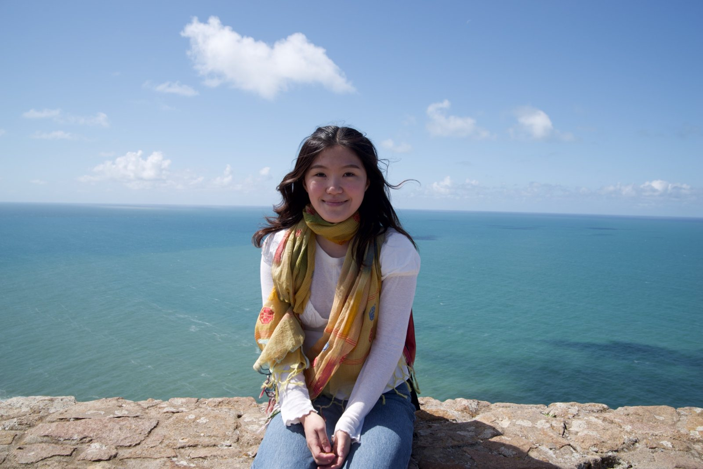
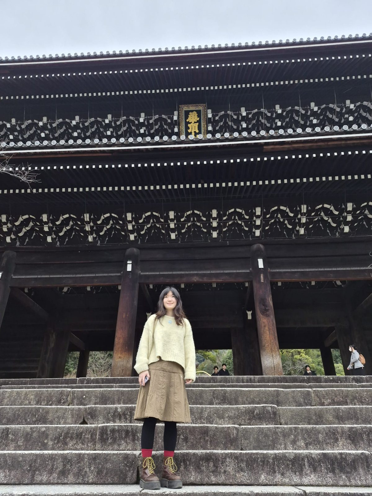
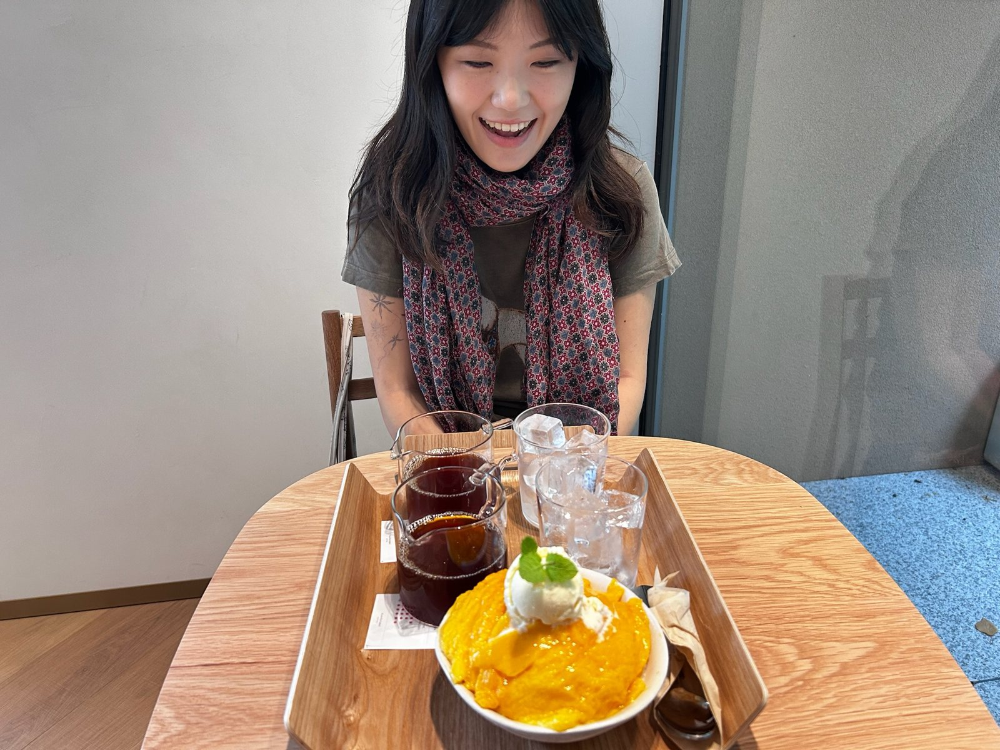
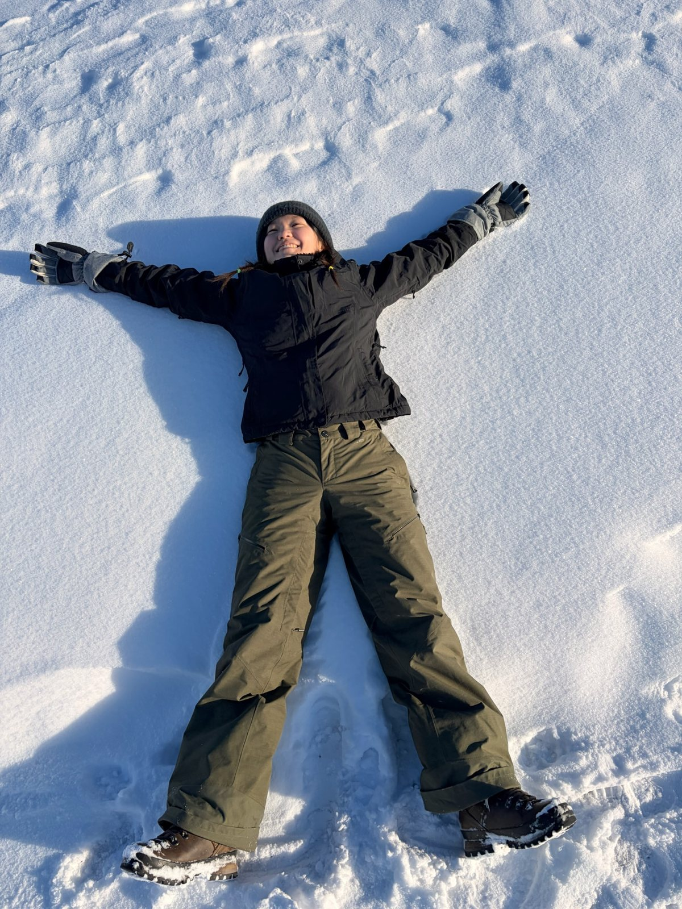
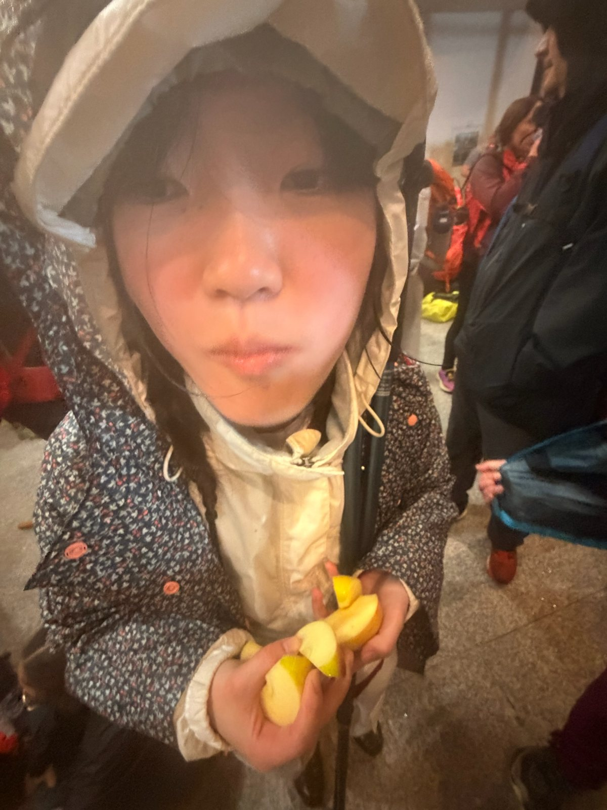
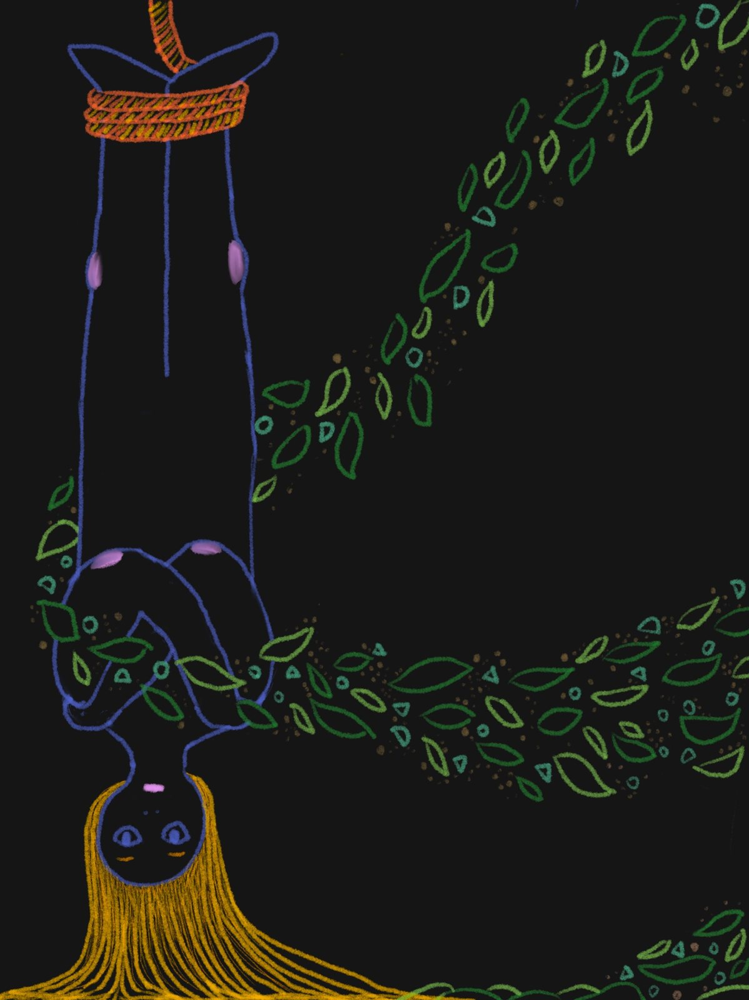
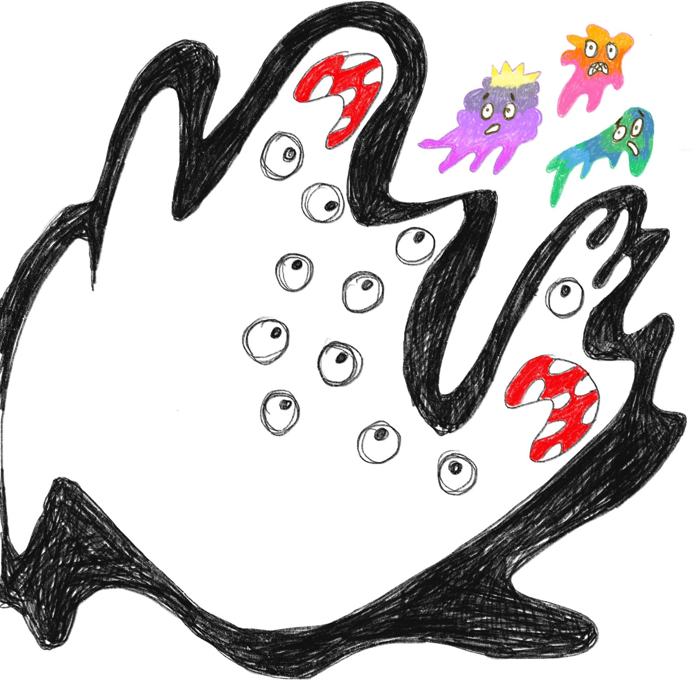

I like learning a new field well enough to apply computer science to it, so far genomics, rainforest ecology, education and manufacturing. Lately I’ve become most interested in explainable machine learning: how to explain behavior a model draws from what it learned in training, not just from its input.
Experience
AI Research Intern, INEEJI
Jun 2026 – now
AI for manufacturing, South Korea
Show detailsHide details
Emissions forecasting and control. The existing NOx model for an industrial glass furnace leaned mostly on past NOx values, so it predicted reasonably well while learning little about how the furnace actually works. I built a pipeline that derives causal relations from domain knowledge, tests them against the data, and validates models by simulating interventions. It cut overall prediction error by 16% (RMSE 5.7 → 4.8 ppm), and by about a third when the oxygen ratio was changed (6.8 → 4.5 ppm), which is the case that matters for control. The team has since adopted the pipeline.
Demand forecasting. Built and deployed a two-stage system for ~300 products of a food manufacturer, combining the Chronos-2 time-series foundation model with a tree-based model. It lowered forecast error (WAPE) by 44% against the baseline and by 21% against the previous production model.
Explaining Chronos. Shapley attributions missed the weekly rhythm the model clearly used. Testing it directly showed that most of that pattern lived in the model's weights, not its input, which is something input-based explanations cannot capture.
Research Intern, Laboratory of Toxicology, ETH Zurich
Feb – Jul 2025
Supervised by Dr. Takhaveev and Prof. Stelling
Show detailsHide details
Studied how chronic stress and time of day affect DNA oxidation in mouse brain tissue, and how it relates to gene expression: up to 106 million features, only 20 samples. I ran two-way ANOVA on every feature with false-discovery control, alongside Random Forest, XGBoost and multi-omics factor analysis. I also noticed that morning and evening samples had been processed separately, which could fake a time-of-day effect, so I based the main conclusions on the effects that confound couldn't explain.
I also built a pipeline that runs the lab's common statistical tests in parallel on the computing cluster, which the lab now uses.
Led weekly exercise sessions for first-semester computer science students. I also wrote weekly summaries of the material.
Designed and taught programming workshops for primary and secondary school pupils across Switzerland.
Projects
Evaluating AI tutors with LLMs
Sep 2024 – Feb 2025
Bachelor's thesis with Prof. Mrinmaya Sachan, LRE Lab, ETH AI Center, grade 6/6
Show detailsHide details
A framework that uses large language models to judge the teaching quality of tutor responses, comparing prompting strategies across LLaMA and GPT models. I later added fine-tuning experiments, and fine-tuned GPT performed best. I also open-sourced an annotated dataset of tutoring dialogues.
Mixed reality for autonomous racing
ETH course project, grade 6/6
Show detailsHide details
In a team of four, we built a Meta Quest 3 app that overlays live data from the Chronos autonomous racing platform onto the physical track. I worked on the data connection from the racing platform to the headset, including fixing a lag that made the car's planned route trail behind it, and also built many of the app's UI elements.
Rainforest canopy mapping
Apr – May 2024
AI + Environment Hackathon, 4 weeks, team of three
Show detailsHide details
Existing methods use either LiDAR or images; we had both. I used canopy outlines from the LiDAR data as ground truth to fine-tune image-based models, and our pipeline also classified tree species. GainForest used our pipeline in its XPRIZE Rainforest Finals.
Education
Outside of work
I grew up between countries. I was born in Korea, spent two stretches of my childhood in the US, moved to Germany at 14 without speaking any German and finished school there, then came to Switzerland for university. So I speak Korean, German and English, and I learned Italian in school. In my free time I love stories and making things: I read, watch a lot of movies, write, draw, and occasionally make stop-motion videos. I also try to stay active and, like every student in Switzerland, I go hiking.




Things I've made

